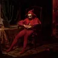
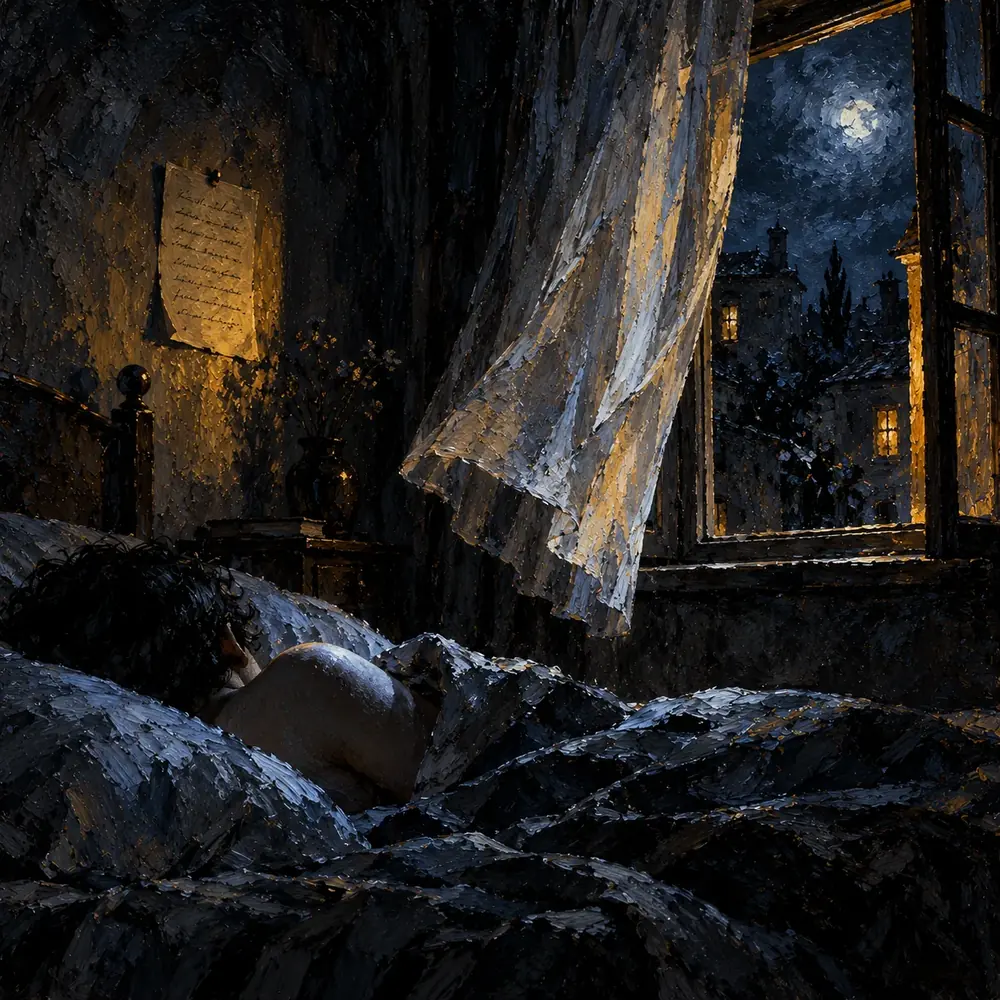

نسیم
سهیل آقایانی
بعضی وقتا یه نسیمی میاد تو اتاقم. با اینکه سرمای غریبهای داره، اما همیشه یه حس آشنایی رو زنده میکنه. این نسیم همیشه یه راه دلفریب برای لمس پوستم پیدا میکنه؛ جوری که انگار من رو کاملاً میشناسه. یه حس عجیب و دلگرمکننده داره وقتی میبینم هیچ زوری نمیزنه و اصلاً سعی نمیکنه با شدت رد بشه و بره.
همیشه جوری رفتار میکنه انگار یه اتفاق جدید و غیرمنتظرهست، اما در عین حال انگار طبیعیترین چیز دنیاست که من بخوام اینجا باشم؛ جدا و ایمن از جهانِ پر از آلودگی، جایی همین پایین، زیر پاهای ما. انگار عجیبه جایی باشم که نفسها آروم و خاطرات پاک میشن.
جوری میون دستام حرکت میکنه، جوری از روی شونههام دستام رو تماشا میکنه و گاهی بوسهای روی گردنم میکاره که انگار... انگار کنارم نشسته، بدون اینکه نیاز باشه حرفی بزنه. سرمای لمسش تنها چیزیه که من رو از آتیش خورشید حفظ میکنه، و با این حال میذاره گرمایی رو زیر پوستم حس کنم که بفهمم زمینِ زیر پام واقعیه.
این باد تنها چیزیه که اینجا رو به «خونه» تبدیل میکنه. یه حقیقت شیرین که با چشمای پر از زندگیاش ترکیب شده و این لحظه رو ساخته.
توی اتاق ما یه شعر هست:
بادی میوزد، بیش از اندازه...
و چنان سبک میآید
که گویی هیچچیز توانِ نگه داشتنش را ندارد.
ورود شیرین و زیباش نوید این رو میده که قرار نیست فقط امشب مهمون اتاقم باشه. این اتاق... این اتاق دیگه متعلق به اونه.